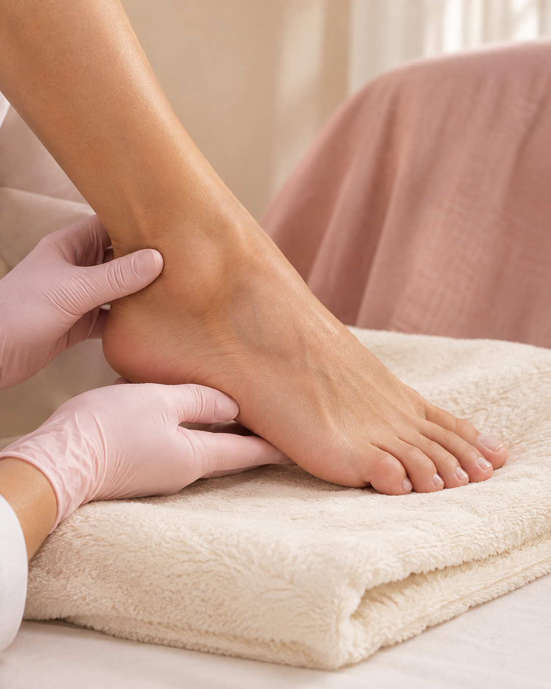

Unhas encravadas
Atenção ao desconforto e avaliação do cuidado indicado para as suas unhas.
Conversar com a EdnaSeus pés sustentam a sua história. Reserve um momento para cuidar deles com a atenção que você merece.

IMAGEM ILUSTRATIVACada pé tem uma história e cada atendimento começa com uma conversa. Conheça alguns motivos para procurar uma avaliação.
Atenção ao desconforto e avaliação do cuidado indicado para as suas unhas.
Conversar com a EdnaUm olhar cuidadoso para as áreas de atrito e as necessidades da pele dos seus pés.
Conversar com a EdnaAvaliação de alterações nas unhas e orientação sobre os próximos passos do cuidado.
Conversar com a EdnaCuidado de rotina e orientações para dar mais atenção aos pés no seu dia a dia.
Conversar com a EdnaO cuidado indicado é definido após uma avaliação individual.
Cuidar dos pés é cuidar de você por inteiro. É com esse olhar que a Edna recebe cada pessoa: ouvindo, acolhendo e dedicando atenção às suas necessidades.
Na consulta, você tem espaço para contar o que sente, tirar suas dúvidas e entender o cuidado proposto para os seus pés.
A experiência de quem já passou por aqui pode ajudar você a dar o primeiro passo.
Conheça as experiências dos pacientes.
Consulte as avaliações e a nota atualizada diretamente no perfil do Google.
Se preferir, fale diretamente com a Edna pelo WhatsApp.
Tirar uma dúvidaToque em “Agendar pelo WhatsApp” para conversar diretamente com a Edna. Informe sua necessidade e consulte os dias e horários disponíveis.
Você também pode procurar atendimento para uma avaliação de rotina e orientações sobre o cuidado dos pés. Converse com a Edna sobre a sua necessidade.
Entre em contato pelo WhatsApp para consultar os valores e as formas de pagamento para o atendimento que você procura.
Na avaliação, você poderá explicar seu desconforto e esclarecer suas dúvidas. O cuidado será orientado conforme as suas necessidades.
Vamos encontrar um horário para dar aos seus pés a atenção que eles merecem?
Agendar minha consulta